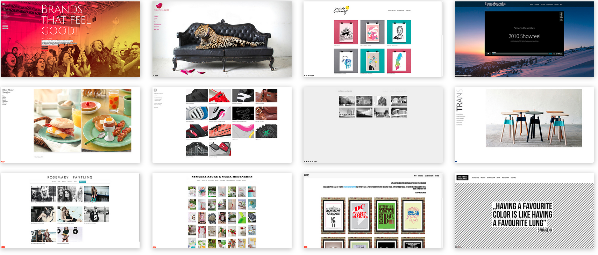

Portfolio
Brief
Throughout the semester various projects and tasks and milestones were to be completed including the development of this portfolio. The portfolio was designed to culminate all assessment, various achievements and productions throughout the semester in DECO1800.
In addition to showcase individual contributions throughout this semester the portfolio is purposed to showcase Additionally this project was used to demonstrate creativity and skills in designing and implementing a web application.
Inspiration
I began this project by seeking inspiration and researching works from other designers and developers. Portfoliobox along with many other websites list numerous examples.
This was an insight into the style which appealed to me and I therefore decided to sway towards a clean, crisp and simple design.
Prototype
To achieve a Clean crisp and simple design I decided to have individual pages for each required item, however link all milestones related to the main project on one page.
Each page was to have a header for navigation and plenty of white space to reduce clutter, display images better and make the text easier to read.
Furthermore I decided to have a home page, as an entry point to the portfolio. This page was designed to be clean and have minimal text allowing the following pages to be text heavy.
Implementation
I started this project by implementing the core of functionality, so I started with the Home page and the linking pictures. From there I created navigation bars at the top of all the information pages.
From here the web page was navigable yet had no styling therefore I added background images to top of the information pages, and a background image to the homepage.
Fonts and colors were the next task; I found Google Web Fonts and choose a few fonts for various aspects of the website. Furthermore Adobe Color was extremely helpful when developing a colour theme to compliment the black and white theme.
Throughout the semester upon completion of a project I was then able to update the content on each page. It was until the end however did I format all the pictures and add finishing functionality and touches to produce a clean and seamless portfolio.
Reflection
Throughout the semester I completed work towards functionality therefore had little practice with css and no practice with styling. Throughout my degree I actually have not done many creative subjects so to stat with I had to do a lot of research to decide what I did and did not like so I could implement a creative design. I decided simple and clean was best for me and went with it. That for me was probably the hardest part of this project.
Additionally because of this uncertainty I changed my design layout a few times.
There are various minor details of the final product which I would improve namely styling objects and user interaction. For instance I could implement the image sliders to automatically scroll and the figure caption displayed better. Finally some of the images affect the plain simple color scheme therefore these images should be edited more to match the rest of the web page.
Overall however I believe the content supplied sufficiently describes my contribution throughout this course and as a container I am happy with it. It is my first graphic design work I have completed and I think it looks quite good, exactly what I was aiming towards.